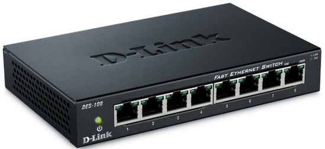
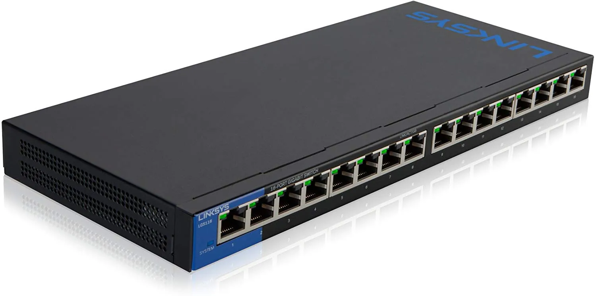
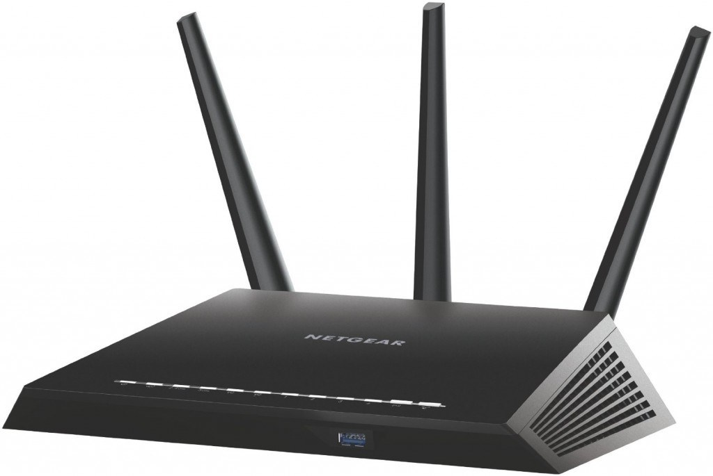

Componentes
Los dispositivos de conexión de redes son aquellos que hacen posible conectar computadoras entre sí o redes entre sí. Al hablar de una red es indispensable mencionar una placa de red o Nic. La NIC puede ser definida como la Placa de Red propiamente dicha, la cual conecta computadoras entre sí por medio de un cable u ondas celulares. Aquí un ejemplo de las diferentes NIC Comunes (PCI ) Para conexión con medios físicos (cables) e inalámbricas.

Placas para puerto PMCIA (Para computadoras portátiles), para medios físicos e inalámbricos

MÓDEM:
Un módem es un dispositivo que sirve para enviar una señal llamada moduladora mediante otra señal llamada portadora. Permite conectar la PC a la línea telefónica y por ende a otras computadoras o la placa CABLE-MODEM que permite conectar la PC a Internet por medio de cable de la televisión.
El modulador emite una señal denominada portadora. Generalmente, se trata de una simple señal eléctrica sinusoidal de mucha mayor frecuencia que la señal moduladora. La señal moduladora constituye la información que se prepara para una transmisión (un módem prepara la información para ser transmitida, pero no realiza la transmisión). La moduladora modifica alguna característica de la portadora (que es la acción de modular), de manera que se obtiene una señal, que incluye la información de la moduladora. Así el demodulador puede recuperar la señal moduladora original, quitando la portadora.
TIPOS DE MÓDEMS:
Existen tres tipos diferentes de módems, puesto que los distintos entornos de comunicación requieren diferentes métodos de envío de datos. Estos entornos se pueden dividir en dos áreas relacionadas con el ritmo de las comunicaciones:
La comunicación asíncrona, conocida como «async», es probablemente la forma de conexión más extendida. Esto es debido a que async se desarrolló para utilizar las líneas telefónicas.
Cada carácter (letra, número o símbolo) se introduce en una cadena de bits. Cada una de estas cadenas se separa del resto mediante un bit de inicio de carácter y un bit de final de carácter. Los dispositivos emisor y receptor deben estar de acuerdo en la secuencia de bit inicial y final. El equipo destino utiliza los marcadores de bit inicial y final para planificar sus funciones relativas al ritmo de recepción, de forma que esté preparado para recibir el siguiente byte de datos.
La comunicación no está sincronizada. No existe un dispositivo reloj o método que permita coordinar la transmisión entre el emisor y el receptor. El equipo emisor sólo envía datos y el equipo receptor simplemente los recibe. A continuación, el equipo receptor los comprueba para asegurarse de que los datos recibidos coinciden con los enviados. Entre el 20 y el 27 por 100 del tráfico de datos en una comunicación asíncrona se debe al control y coordinación del tráfico de datos. La cantidad real depende del tipo de transmisión, por ejemplo, si se está utilizando la paridad (una forma de comprobación de errores). Las transmisiones asíncronas en líneas telefónicas pueden alcanzar hasta 28.800 bps. No obstante, los métodos de compresión de datos más recientes permiten pasar de 28.800 bps a 115.200 bps en sistemas conectados directamente.
La comunicación síncrona confía en un esquema temporal coordinado entre dos dispositivos para separar los grupos de bits y transmitirlos en bloques conocidos como «tramas». Se utilizan caracteres especiales para comenzar la sincronización y comprobar periódicamente su precisión.
Dado que los bits se envían y se reciben en un proceso controlado (sincronizado) y cronometrado, no se requieren los bits de inicio y final. Las transmisiones se detienen cuando se alcanza el final de una trama y comienzan, de nuevo, con una nueva. Este enfoque de inicio y final es mucho más eficiente que la transmisión asíncrona, especialmente cuando se están transfiriendo grandes paquetes de datos.
Los protocolos síncronos realizan un número de tareas que no realizan los protocolos asíncronos. Principalmente son:
- Formatear los datos en bloques
- Agregar información de control
- Comprobar la información para proporcionar el control de errores
HUB:
El Hub o concentrador es un equipo de redes que permite conectar entre sí otros equipos y retransmite los paquetes que recibe desde cualquiera de ellos a todos los demás. Los hubs han dejado de ser utilizados, debido al gran nivel de colisiones y tráfico de red que propician.
SWITCH:
Un switch (en castellano "conmutador") es un dispositivo electrónico de interconexión de redes de ordenadores similar al Hub, pero que tiene la capacidad de poder ―conocer‖ las computadoras que tiene conectadas en sus puertos y poder administrar el ancho de banda en el tráfico de información de una red, repartiéndola de manera pareja según se vaya necesitando de manera eficiente.
ROUTER
Son dispositivos electrónicos de interconexión que mantienen el tráfico fluyendo eficientemente sobre caminos predefinidos en una interconexión de redes complejas, ofreciendo un encaminamiento "inteligente" hacia el destino de la información.
